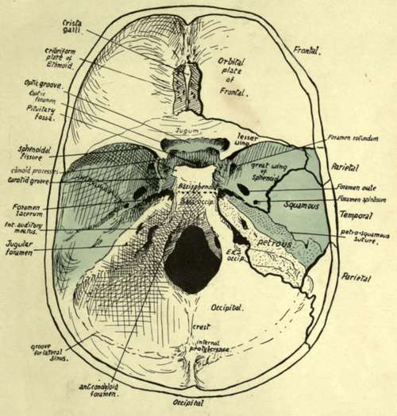

Cranial Bones. Part 3
Description
This section is from the book "The Anatomy Of The Human Skeleton", by J. Ernest Frazer. Also available from Amazon: The anatomy of the human skeleton.
Cranial Bones. Part 3
The temporal is a compound bone whose various parts will be dealt with subsequently, but its general divisions can be easily and advantageously made out now. The petrous is all that part in contact with the occipital, and includes the basis of the mastoid process. The squama forms the articular area, and base just in front of this, as well as practically all the bone which appears on the lateral aspect of the skull, including the zygoma ; but in the lower and back part of this surface the squama only partly covers in the petrous basis of the mastoid, and thus a petrosquamous suture is visible, behind and below, while the petrous bone is seen laterally (Fig. 160). The styloid process and tympanic plate are morphologically separate portions of the bone, which may therefore be said to be compounded of four parts-not counting the ossicles of the middle ear that are enclosed in it.
A large round foramen in the basal surface of the petrous, in front of the jugular foramen, is the opening of the carotid canal in that bone for the passage of the internal carotid artery.
Various foramina in the basal surface of the great wing will be studied later.
In front of the line of pterygoid processes are placed the bones of the face : the pterygoid processes form a part of the support of the facial skeleton. Owing to the presence of the face it is not easy to follow the proper cranial base, but with a little trouble a fair notion of its arrangement can be obtained even with the face bones in situ, and this can be supplemented by an examination of a skull in which they have been removed.
Thus, looking into the orbits, the roof is seen to be considerably higher than the base of the skull we have so far examined, yet it is formed by the orbital plates of the cranial frontal bone ; at the back part, however, it may be possible to see that each orbital plate articulates with a narrow-pointed process of bone, the lesser wing of the sphenoid, which is separated below by the sphenoidal fissure from the orbital surface of the great wing.
At its lower border the orbital surface of the great wing becomes continuous with the under or basal surface which we have already examined, so that the base is completed in this region ; examination of this part from the side will show the continuity of the cranial base. But in the middle there is an interval between the orbital plates of the frontal; a finger in one orbit and thumb in the other will grasp between them a delicate bony mass, the ethmoid, concerned in the formation of the upper part of the nasal cavities, and the upper plate of this mass fills up the interval between the orbital plates in the floor of the cranial cavity. The back surface of the ethmoid comes up against the front surface of the body of the sphenoid, and thus the base is completed centrally.
The relations to each other of these bones in the base of the cranium can be grasped more completely if this part of the skull is examined from above, the top of the skull being removed (Fig. 162). The upper or cerebral aspect of the base is divisible into three large (primary) fossa, anterior, middle and posterior, each extending from one side to the other.
The posterior fossa is seen to be floored by the occipital, and the three basal parts of this bone are easily recognised arranged round the foramen magnum. At the sides in front there are obliquely set prominent bones which are directed forwards and inwards and divide the posterior from the middle fossa. Examine these bones and compare their relations with the under surface of the base, and it becomes apparent that these are simply the petrous bones standing up in the cavity of the skull: their inner and posterior aspects form part of the wall of the posterior fossa and have the jugular foramina between them and the occipital, while their upper and front aspects form part of the floor of the middle fossa. External to each petrous bone the squama can be recognised as forming a part of the side wall of the middle fossa.
The sphenoid can be easily examined from this aspect; its central portion or body is continuous through the basi-sphenoid with the basi-occiput, and the floor of the posterior fossa can be traced forward on to the sloping back of the sphenoid. The body presents a deep pituitary fossa for the pituitary body, which connects the two lateral portions of the middle fossa across the mid-line, and is overhung from behind by the edge of the back part of the bone. The upper aspect of the body bears a fancied resemblance to a Turkish saddle,* and the back portion, which constitutes the front end of the posterior fossa, is hence frequently termed the dorsum sella.
On each side of the body the great wings are seen to form a large part of the floor of the middle fossa. Each great wing extends back, as seen on the lower surface, to fit into the angle between the petrous and squamous parts of the temporal: thus the floor of each half of the middle fossa is made up of sphenoid, upper, outer, and front surface of petrous, and lower part of squama. A petro-squamous suture runs back from the angle between the petrous and squama.
* The upper hollow surface is often termed the sella turcica.
Fig. 162.-Cranial surface of base of skull. The middle fossa is coloured, and the posterior and anterior fossae lie behind and in front of this coloured part respectively. On the right side, the positions of the sutures are indicated, so that the bones which form each fossa can be seen. Compare with Fig. 181, in which the dura mater is in place.
Where the great wing forms part of the floor of the fossa it is in a nearly horizontal plane, and its under surface is the inferior, basal, or pterygoid surface already seen below : in front it turns upward and is separated from the lesser wing by the sphenoidal fissure, and this turned-up part carries on its front aspect the orbital surface of the wing. Laterally it turns up on the side wall of the skull, and here its outer surface constitutes the temporal surface of the wing.
These three surfaces, which we have already inspected, are more or less flat areas, looking in different directions, and therefore separated from each other by sharply-marked borders, but on the cerebral aspect the angles between the corresponding districts are raised and rounded off, making the wing a thick bony mass hollowed to receive the temporo-sphenoidal lobe of the brain.
The back border of the small wing overhangs the greater wing to a small extent, so that one must look under the former to see the extent of the sphenoidal fissure : the fissure opens into the cavity of the orbit, being between the two wings, which are both concerned in forming part of the orbital walls.
The anterior fossa is floored mainly by the orbital plates of the frontal, but behind these are the lesser wings with which they articulate, and between them is the cribriform plate of the ethmoid-so termed because it is pierced by many foramina for the passage of the olfactory nerve fibres. This upper surface of the ethmoid articulates behind with a raised part of the sphenoid connecting the two lesser wings and frequently termed the jugum sphenoidale, which is also in the floor of the anterior fossa.
As soon as the arrangement of the bones in the fossa? is seen and mastered, the student can proceed to the recognition of some of the more important points visible (see Fig. 162) on this aspect of the base. The crista galli is a blunt process of bone on the ethmoid for attachment of the " falx cerebri " : this is the sagittal sheet of dura mater that lies between the two cerebral hemispheres. Immediately behind the jugum sphenoidale is the optic groove, leading on each side to the optic foramen, through which the optic nerve and ophthalmic artery pass to the orbit. The olivary eminence is between this groove and the pituitary fossa. The groove, foramina, eminence, and fossa are all in the middle primary fossa.
The upper opening of the foramen lacerum is seen just in front of the apex of the petrous : here the internal carotid artery emerges from the apex and runs forward on to the side of the body of the sphenoid, which accordingly shows a carotid groove here.
The internal auditory meatus, for the passage of the facial and auditory nerves, is easily recognised on the inner side of the petrous, and the jugular foramen is situated below it, between the petrous bone and the ex-occipital: large grooves are seen leading to this foramen, which lodge the venous sinuses that form the internal jugular vein. Internal to this again, and on a lower level, near the margin of the foramen magnum, is another canal that ends below in front of and external to the condyle, and is therefore termed the anterior condylar foramen (Fig. 162).
Behind the foramen magnum is a median internal occipital crest, ending above in the internal occipital protuberance.
Grooves for the lateral sinuses run horizontally forward on each side from the protuberance and turn down on the petro-mastoid to reach the jugular foramina. The tentorium cerebelli, the partial sloping diaphragm of dura mater that separates the cerebrum and cerebellum, is attached along the horizontal parts of the grooves and then along the prominent upper edges of the petrous bones to the projecting bony processes on the sphenoid : thus the cerebellum is altogether confined to the posterior fossa. The bony sphenoidal points to which this sheet of dura mater is attached are termed clinoid processes : the anterior process is a well-marked projection from the root of the small wing on each side, the posterior, also prominent, project at the upper angles of the dorsum sellaa, while the middle, often absent, is a small tubercle internal to each carotid groove. These processes are connected by inter clinoid ligaments.
The position and connections of the great venous sinuses of the dura mater should now be followed in the skull (Fig. 163). They are all in relation with the bones with the exception of those that are enclosed in the free parts of the falx and tentorium, i.e., the inferior longitudinal and straight sinuses.
The cranial bones are for the most part plainly of the " tabular " variety, and are built in two compact layers-the inner and outer tables of the skull- with an intervening stratum composed of bony pillars connecting the tables and forming a coarse cancellous layer containing red marrow : this is termed the diploe, and large anastomosing channels run through it for the diploic veins that drain the tissue.
The diploe appears first about the age of ten ; it becomes most developed in bones and regions that are thick.
The cranial bones, with the exception of the occipital and parietals, are connected with the bones of the face, so that it is advisable to gain some general notion of the arrangement of the facial skeleton from a scrutiny of the complete or halved skull before entering upon a detailed examination of the individual bones of the cranium.
Continue to: